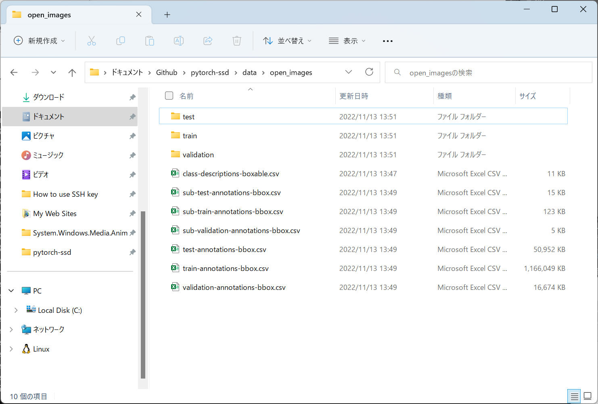
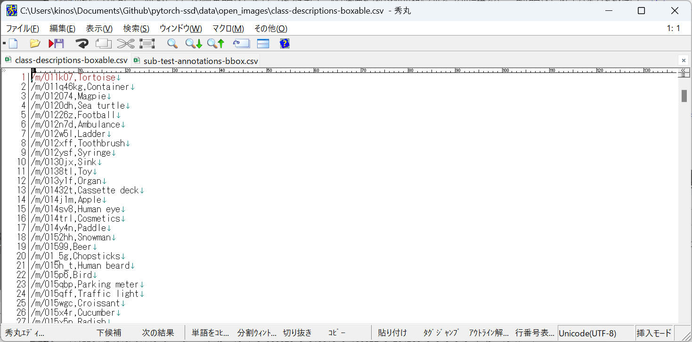
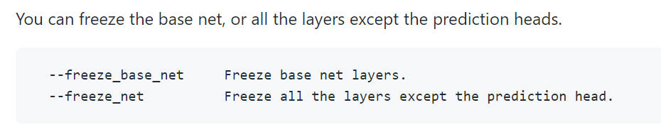
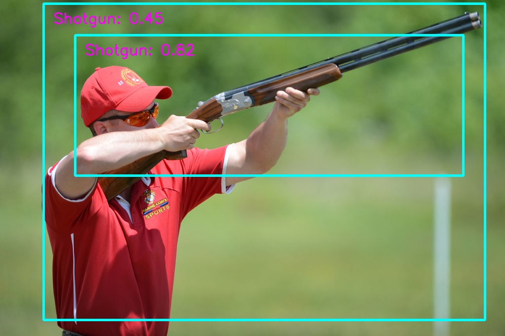
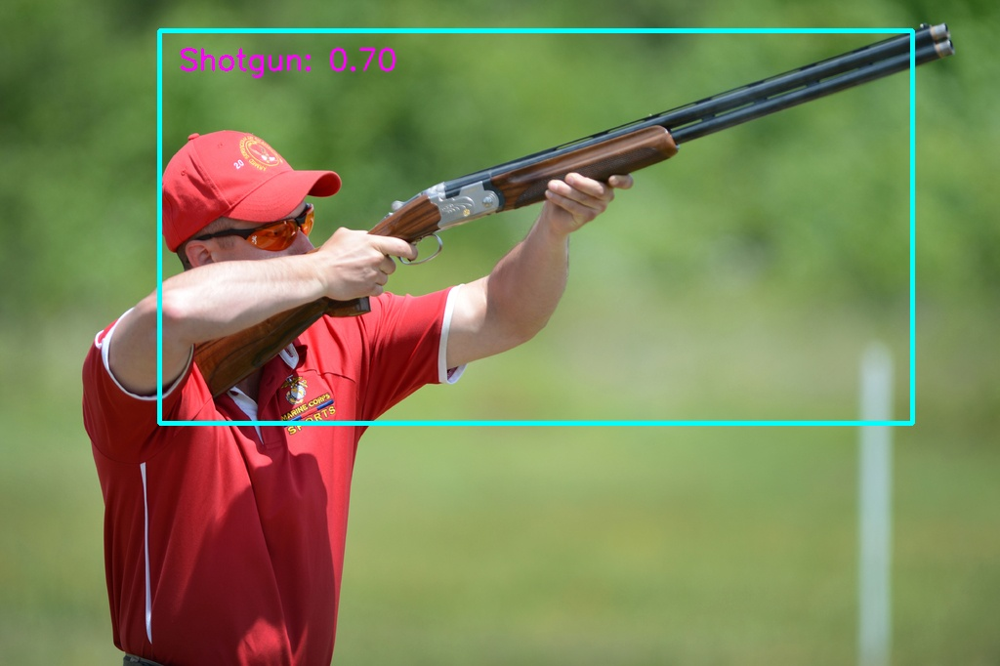
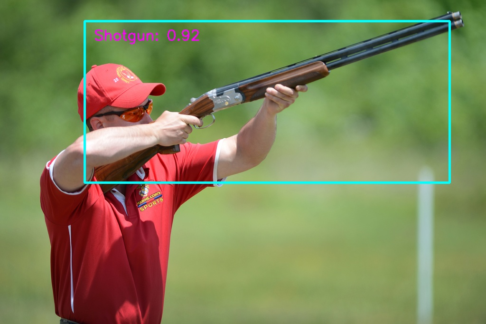
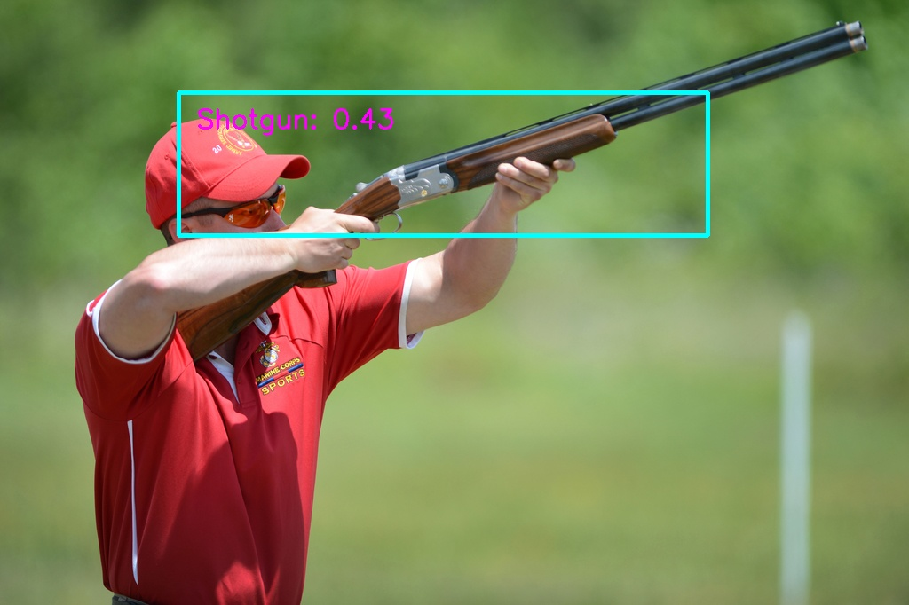
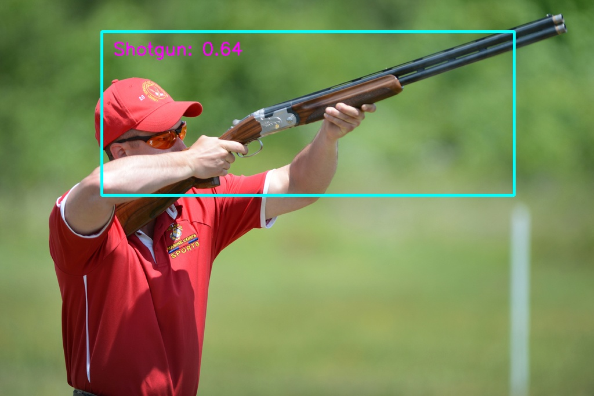

5-1-1. Windows の場合
Windows 環境でどこまでできるか不安ですが、作業記録を残しつつ、できるところまで実際にやっていきたいと思います。
[評価環境]
|
| 言語 : |
Python, |
3.10.7 |
|
| |
PyTorch, |
1.12.1+cpu |
|
| OS : |
Windows 11 home, |
22H2 |
|
1.
pytorch-ssd をクローンします。（ここまで読まれた方は恐らく完了しているでしょう）
こちら の記載を参考に実施します。
2. 以下のコマンドで必要なライブラリーをインストールします。これらは後述の "open_images_downloader.py"
で使用しているライブラリです。
pip install boto3 pandas
3. ディレクトリ移動
ターミナルソフトを起動後、 pytorch-ssd をクローンしたフォルダへ移動（"cd pytorch-ssd" など）します。
または Explorer で目的フォルダを開いた後、Explorer のアドレスエリアで "cmd" + [Enter] します。
4. まずは再学習済みデータを使ってデモ動作してみます。
こちら
では最初に以下の通り記載されています。
wget -P models https://storage.googleapis.com/models-hao/gun_model_2.21.pth
wget -P models https://storage.googleapis.com/models-hao/open-images-model-labels.txt
python run_ssd_example.py mb1-ssd models/gun_model_2.21.pth models/open-images-model-labels.txt ~/Downloads/big.JPG
Windows環境では wget を標準で使用できませんので、bitsadmin.exe へ置き換えると最初の２行を以下のような感じで。
c:\{作業フォルダ} の部分をご自身の環境に合わせて修正して実行してください。
bitsadmin /TRANSFER htmldl https://storage.googleapis.com/models-hao/gun_model_2.21.pth c:\{作業フォルダ}\models\gun_model_2.21.pth
bitsadmin /TRANSFER htmldl https://storage.googleapis.com/models-hao/open-images-model-labels.txt c:\{作業フォルダ}\models\open-images-model-labels.txt
python run_ssd_example.py mb1-ssd models/gun_model_2.21.pth models/open-images-model-labels.txt {テストするJPEGファイル}
※ 記載の手順で進めても "big.JPG" ファイルはありませんでした。GUN のテストデータを必要としますので、後述の「5.
Download data」を実施後にこの画像ファイルを使って実験した方が良いと思われます。
5. Download data
インターネットから学習データ一式を取得します。
資料では下記のように書いていますが、Windowsではうまくいかず、エラーになりました。
python open_images_downloader.py --root ~/data/open_images --class_names "Handgun,Shotgun" --num_workers 20
"--root"
の指定フォルダを下記のようにすることで無事ダウンロードすることができました。JPEG画像がそれなりの枚数あるので、私の環境で全データのダウンロードに５分ぐらいかかりました。
python open_images_downloader.py --root ./data/open_images --class_names "Handgun,Shotgun" --num_workers 20
6. 確認
ダウンロード完了後の様子を下図に示します。
指定したフォルダ "./data/open_images" の中に７つの csv ファイルと、３つのフォルダ（test, train,
validation）に多くのJPEG画像ファイルを保存していることがわかります。

"test" フォルダ内の様子です。

"class-descriptions-boxable.csv" の様子です。分類するクラス一覧を記述しているようです。

"sub-test-annotations-bbox.csv" の様子です。画像データおよびアノテーションデータ一覧のようです。
XMin,XMax,YMin,YMax の４つは、画像データ上の物体の位置を示しています。それぞれ 0.0～1.0
の範囲で表記するルールとなっているため画像の解像度に影響されません。
LabelName, id, に記載の情報は、ClassName
と紐づけられている情報のようです。"class-descriptions-boxable.csv" で例えば "/m/0gxl3" を検索すると
"Handgun" となっています。

以上のような構成でデータを準備することで、あたなや私が独自に学習したい物体と画像についても同様に AI 学習データを作成できることがわかりました。
7. 学習済みモデルを保存
本ページを上から順に進めてきた人たちは既に models フォルダに学習済みモデルデータを保存済みと思います。まだの方は、こちらに記載の内容に従って
"mobilenet-v1-ssd-mp-0_675.pth" をダウンロードしておきます。
8. Retrain (再学習)を実行します
資料では下記のように書いています。
python train_ssd.py --dataset_type open_images --datasets ~/data/open_images --net mb1-ssd --pretrained_ssd models/mobilenet-v1-ssd-mp-0_675.pth --scheduler cosine --lr 0.01 --t_max 100 --validation_epochs 5 --num_epochs 100 --base_net_lr 0.001 --batch_size 5
Windows 環境で動作する場合は少なくとも --datasets
~/data/open_images
の部分を実際の環境に合わせて修正したほうがよさそうです。ここでは下記コマンドへ修正して実行してみます。
python train_ssd.py --dataset_type open_images --datasets ./data/open_images --net mb1-ssd --pretrained_ssd models/mobilenet-v1-ssd-mp-0_675.pth --scheduler cosine --lr 0.01 --t_max 100 --validation_epochs 5 --num_epochs 100 --base_net_lr 0.001 --batch_size 5
補足：
上記コマンドに含んでいませんが資料では下記のような説明も記載されていました。

--freeze_net を指定することで "prediction head"
を除いて全レイヤーをフリーズと記載されています。俗にいう "転移学習"
を行えそうです。これを指定することで演算が軽くなることを期待できるので、例えばCPU動作でも動作可能なレベルになるか、などを後々評価してみたいところです。
--freeze_base_net を指定することで "base net
layers" をフリーズするようです。こちらも "転移学習" のバリエーションの一つですね。本ページの例では、MobileNet 部分をフリーズして SSD or SSD-Lite
部分をフリーズしない、と読めば良いのかな、と想像しています。
各種ちゃんと動作するようになったらこちらも比較評価してみたいと思います。
以下、上記コマンド実行後のコンソール出力内容です。
データ読み込みまでは問題なくできていそうですが、"Start training from epoch 0." の後でエラーとなりました。
2022-11-13 15:04:07,989 - root - INFO - Namespace(dataset_type='open_images', datasets=['./data/open_images'], validation_dataset=None, balance_data=False, net='mb1-ssd', freeze_base_net=False, freeze_net=False, mb2_width_mult=1.0, lr=0.01, momentum=0.9, weight_decay=0.0005, gamma=0.1, base_net_lr=0.001, extra_layers_lr=None, base_net=None, pretrained_ssd='models/mobilenet-v1-ssd-mp-0_675.pth', resume=None, scheduler='cosine', milestones='80,100', t_max=100.0, batch_size=5, num_epochs=100, num_workers=4, validation_epochs=5, debug_steps=100, use_cuda=True, checkpoint_folder='models/')
2022-11-13 15:04:07,989 - root - INFO - Prepare training datasets.
2022-11-13 15:04:08,277 - root - INFO - Dataset Summary:Number of Images: 961
Minimum Number of Images for a Class: -1
Label Distribution:
Handgun: 727
Shotgun: 580
2022-11-13 15:04:08,282 - root - INFO - Stored labels into file models/open-images-model-labels.txt.
2022-11-13 15:04:08,282 - root - INFO - Train dataset size: 961
2022-11-13 15:04:08,282 - root - INFO - Prepare Validation datasets.
2022-11-13 15:04:08,302 - root - INFO - Dataset Summary:Number of Images: 123
Minimum Number of Images for a Class: -1
Label Distribution:
Handgun: 81
Shotgun: 66
2022-11-13 15:04:08,302 - root - INFO - validation dataset size: 123
2022-11-13 15:04:08,302 - root - INFO - Build network.
2022-11-13 15:04:08,349 - root - INFO - Init from pretrained ssd models/mobilenet-v1-ssd-mp-0_675.pth
2022-11-13 15:04:08,391 - root - INFO - Took 0.04 seconds to load the model.
2022-11-13 15:04:08,396 - root - INFO - Learning rate: 0.01, Base net learning rate: 0.001, Extra Layers learning rate: 0.01.
2022-11-13 15:04:08,396 - root - INFO - Uses CosineAnnealingLR scheduler.
2022-11-13 15:04:08,396 - root - INFO - Start training from epoch 0.
C:\Users\kinos\AppData\Local\Programs\Python\Python310\lib\site-packages\torch\optim\lr_scheduler.py:131: UserWarning: Detected call of `lr_scheduler.step()` before `optimizer.step()`. In PyTorch 1.1.0 and later, you should call them in the opposite order: `optimizer.step()` before `lr_scheduler.step()`. Failure to do this will result in PyTorch skipping the first value of the learning rate schedule. See more details at https://pytorch.org/docs/stable/optim.html#how-to-adjust-learning-rate
warnings.warn("Detected call of `lr_scheduler.step()` before `optimizer.step()`. "
Traceback (most recent call last):
File "C:\Users\kinos\Documents\Github\pytorch-ssd\train_ssd.py", line 325, in <module>
train(train_loader, net, criterion, optimizer,
File "C:\Users\kinos\Documents\Github\pytorch-ssd\train_ssd.py", line 116, in train
for i, data in enumerate(loader):
File "C:\Users\kinos\AppData\Local\Programs\Python\Python310\lib\site-packages\torch\utils\data\dataloader.py", line 444, in __iter__
return self._get_iterator()
File "C:\Users\kinos\AppData\Local\Programs\Python\Python310\lib\site-packages\torch\utils\data\dataloader.py", line 390, in _get_iterator
return _MultiProcessingDataLoaderIter(self)
File "C:\Users\kinos\AppData\Local\Programs\Python\Python310\lib\site-packages\torch\utils\data\dataloader.py", line 1077, in __init__
w.start()
File "C:\Users\kinos\AppData\Local\Programs\Python\Python310\lib\multiprocessing\process.py", line 121, in start
self._popen = self._Popen(self)
File "C:\Users\kinos\AppData\Local\Programs\Python\Python310\lib\multiprocessing\context.py", line 224, in _Popen
return _default_context.get_context().Process._Popen(process_obj)
File "C:\Users\kinos\AppData\Local\Programs\Python\Python310\lib\multiprocessing\context.py", line 336, in _Popen
return Popen(process_obj)
File "C:\Users\kinos\AppData\Local\Programs\Python\Python310\lib\multiprocessing\popen_spawn_win32.py", line 93, in __init__
reduction.dump(process_obj, to_child)
File "C:\Users\kinos\AppData\Local\Programs\Python\Python310\lib\multiprocessing\reduction.py", line 60, in dump
ForkingPickler(file, protocol).dump(obj)
AttributeError: Can't pickle local object 'TrainAugmentation.__init__.<locals>.<lambda>'
C:\Users\kinos\Documents\Github\pytorch-ssd>Traceback (most recent call last):
File "<string>", line 1, in <module>
File "C:\Users\kinos\AppData\Local\Programs\Python\Python310\lib\multiprocessing\spawn.py", line 116, in spawn_main
exitcode = _main(fd, parent_sentinel)
File "C:\Users\kinos\AppData\Local\Programs\Python\Python310\lib\multiprocessing\spawn.py", line 126, in _main
self = reduction.pickle.load(from_parent)
EOFError: Ran out of input
"UserWarning: Detected call of `lr_scheduler.step()` before
`optimizer.step()`. In PyTorch 1.1.0 and later, you should call them in the
opposite order: `optimizer.step()` before `lr_scheduler.step()`.
Failure to do this will result in PyTorch skipping the first value of the
learning rate schedule. See more details at
https://pytorch.org/docs/stable/optim.html#how-to-adjust-learning-rate
warnings.warn("Detected call of `lr_scheduler.step()` before
`optimizer.step()`." について
こちらは、上記文章中に記載の通り "PyTorch 1.1.0" 以降での仕様変更に伴う警告のようです。
ソースファイル "train_ssd.py" 中を 323行目 周辺について、下記のとおり変更することで警告されなくなります。
（修正後）
for epoch in range(last_epoch + 1, args.num_epochs):
train(train_loader, net, criterion, optimizer,
device=DEVICE, debug_steps=args.debug_steps, epoch=epoch)
scheduler.step()
if epoch % args.validation_epochs == 0 or epoch == args.num_epochs - 1:
val_loss, val_regression_loss, val_classification_loss = test(val_loader, net, criterion, DEVICE)
logging.info(
f"Epoch: {epoch}, " +
f"Validation Loss: {val_loss:.4f}, " +
f"Validation Regression Loss {val_regression_loss:.4f}, " +
f"Validation Classification Loss: {val_classification_loss:.4f}"
)
model_path = os.path.join(args.checkpoint_folder, f"{args.net}-Epoch-{epoch}-Loss-{val_loss}.pth")
net.save(model_path)
logging.info(f"Saved model {model_path}")
（修正前）
for epoch in range(last_epoch + 1, args.num_epochs):
scheduler.step()
train(train_loader, net, criterion, optimizer,
device=DEVICE, debug_steps=args.debug_steps, epoch=epoch)
if epoch % args.validation_epochs == 0 or epoch == args.num_epochs - 1:
val_loss, val_regression_loss, val_classification_loss = test(val_loader, net, criterion, DEVICE)
logging.info(
f"Epoch: {epoch}, " +
f"Validation Loss: {val_loss:.4f}, " +
f"Validation Regression Loss {val_regression_loss:.4f}, " +
f"Validation Classification Loss: {val_classification_loss:.4f}"
)
model_path = os.path.join(args.checkpoint_folder, f"{args.net}-Epoch-{epoch}-Loss-{val_loss}.pth")
net.save(model_path)
logging.info(f"Saved model {model_path}")
（修正後）のプログラムを再度実行すると、とりあえず１つ目の警告（UserWarning）は消えました。
C:\Users\kinos\Documents\Github\pytorch-ssd>python train_ssd.py --dataset_type open_images --datasets ./data/open_images --net mb1-ssd --pretrained_ssd models/mobilenet-v1-ssd-mp-0_675.pth --scheduler cosine --lr 0.01 --t_max 100 --validation_epochs 5 --num_epochs 100 --base_net_lr 0.001 --batch_size 5
2022-11-13 16:35:24,380 - root - INFO - Namespace(dataset_type='open_images', datasets=['./data/open_images'], validation_dataset=None, balance_data=False, net='mb1-ssd', freeze_base_net=False, freeze_net=False, mb2_width_mult=1.0, lr=0.01, momentum=0.9, weight_decay=0.0005, gamma=0.1, base_net_lr=0.001, extra_layers_lr=None, base_net=None, pretrained_ssd='models/mobilenet-v1-ssd-mp-0_675.pth', resume=None, scheduler='cosine', milestones='80,100', t_max=100.0, batch_size=5, num_epochs=100, num_workers=4, validation_epochs=5, debug_steps=100, use_cuda=True, checkpoint_folder='models/')
2022-11-13 16:35:24,380 - root - INFO - Prepare training datasets.
2022-11-13 16:35:24,662 - root - INFO - Dataset Summary:Number of Images: 961
Minimum Number of Images for a Class: -1
Label Distribution:
Handgun: 727
Shotgun: 580
2022-11-13 16:35:24,662 - root - INFO - Stored labels into file models/open-images-model-labels.txt.
2022-11-13 16:35:24,662 - root - INFO - Train dataset size: 961
2022-11-13 16:35:24,662 - root - INFO - Prepare Validation datasets.
2022-11-13 16:35:24,693 - root - INFO - Dataset Summary:Number of Images: 123
Minimum Number of Images for a Class: -1
Label Distribution:
Handgun: 81
Shotgun: 66
2022-11-13 16:35:24,693 - root - INFO - validation dataset size: 123
2022-11-13 16:35:24,693 - root - INFO - Build network.
2022-11-13 16:35:24,743 - root - INFO - Init from pretrained ssd models/mobilenet-v1-ssd-mp-0_675.pth
2022-11-13 16:35:24,774 - root - INFO - Took 0.03 seconds to load the model.
2022-11-13 16:35:24,789 - root - INFO - Learning rate: 0.01, Base net learning rate: 0.001, Extra Layers learning rate: 0.01.
2022-11-13 16:35:24,789 - root - INFO - Uses CosineAnnealingLR scheduler.
2022-11-13 16:35:24,789 - root - INFO - Start training from epoch 0.
Traceback (most recent call last):
File "C:\Users\kinos\Documents\Github\pytorch-ssd\train_ssd.py", line 324, in <module>
train(train_loader, net, criterion, optimizer,
File "C:\Users\kinos\Documents\Github\pytorch-ssd\train_ssd.py", line 116, in train
for i, data in enumerate(loader):
File "C:\Users\kinos\AppData\Local\Programs\Python\Python310\lib\site-packages\torch\utils\data\dataloader.py", line 444, in __iter__
return self._get_iterator()
File "C:\Users\kinos\AppData\Local\Programs\Python\Python310\lib\site-packages\torch\utils\data\dataloader.py", line 390, in _get_iterator
return _MultiProcessingDataLoaderIter(self)
File "C:\Users\kinos\AppData\Local\Programs\Python\Python310\lib\site-packages\torch\utils\data\dataloader.py", line 1077, in __init__
w.start()
File "C:\Users\kinos\AppData\Local\Programs\Python\Python310\lib\multiprocessing\process.py", line 121, in start
self._popen = self._Popen(self)
File "C:\Users\kinos\AppData\Local\Programs\Python\Python310\lib\multiprocessing\context.py", line 224, in _Popen
return _default_context.get_context().Process._Popen(process_obj)
File "C:\Users\kinos\AppData\Local\Programs\Python\Python310\lib\multiprocessing\context.py", line 336, in _Popen
return Popen(process_obj)
File "C:\Users\kinos\AppData\Local\Programs\Python\Python310\lib\multiprocessing\popen_spawn_win32.py", line 93, in __init__
reduction.dump(process_obj, to_child)
File "C:\Users\kinos\AppData\Local\Programs\Python\Python310\lib\multiprocessing\reduction.py", line 60, in dump
ForkingPickler(file, protocol).dump(obj)
AttributeError: Can't pickle local object 'TrainAugmentation.__init__.<locals>.<lambda>'
C:\Users\kinos\Documents\Github\pytorch-ssd>Traceback (most recent call last):
File "<string>", line 1, in <module>
File "C:\Users\kinos\AppData\Local\Programs\Python\Python310\lib\multiprocessing\spawn.py", line 116, in spawn_main
exitcode = _main(fd, parent_sentinel)
File "C:\Users\kinos\AppData\Local\Programs\Python\Python310\lib\multiprocessing\spawn.py", line 126, in _main
self = reduction.pickle.load(from_parent)
EOFError: Ran out of input
次に残るエラーを解決します。
この問題を解決している記事がありました。
上記URLに記載の内容に従って修正した後の「vision/ssd/data_preprocessing.py」を以下に記載します。
修正した場所を色付けしています。
"vision/ssd/data_preprocessing.py"
from ..transforms.transforms import *
class ScaleByStd:
def __init__(self, std: float):
self.std = std
def __call__(self, img, boxes=None, labels=None):
return (img / self.std, boxes, labels)
class TrainAugmentation:
def __init__(self, size, mean=0, std=1.0):
"""
Args:
size: the size the of final image.
mean: mean pixel value per channel.
"""
self.mean = mean
self.size = size
self.augment = Compose([
ConvertFromInts(),
PhotometricDistort(),
Expand(self.mean),
RandomSampleCrop(),
RandomMirror(),
ToPercentCoords(),
Resize(self.size),
SubtractMeans(self.mean),
#lambda img, boxes=None, labels=None: (img / std, boxes, labels),
ScaleByStd(std),
ToTensor(),
])
def __call__(self, img, boxes, labels):
"""
Args:
img: the output of cv.imread in RGB layout.
boxes: boundding boxes in the form of (x1, y1, x2, y2).
labels: labels of boxes.
"""
return self.augment(img, boxes, labels)
class TestTransform:
def __init__(self, size, mean=0.0, std=1.0):
self.transform = Compose([
ToPercentCoords(),
Resize(size),
SubtractMeans(mean),
#lambda img, boxes=None, labels=None: (img / std, boxes, labels),
ScaleByStd(std),
ToTensor(),
])
def __call__(self, image, boxes, labels):
return self.transform(image, boxes, labels)
class PredictionTransform:
def __init__(self, size, mean=0.0, std=1.0):
self.transform = Compose([
Resize(size),
SubtractMeans(mean),
#lambda img, boxes=None, labels=None: (img / std, boxes, labels),
ScaleByStd(std),
ToTensor()
])
def __call__(self, image):
image, _, _ = self.transform(image)
return image
上記修正を行うことで、下記コマンドを正常に実行できるようになりました。
python train_ssd.py --dataset_type open_images --datasets ./data/open_images --net mb1-ssd --pretrained_ssd models/mobilenet-v1-ssd-mp-0_675.pth --scheduler cosine --lr 0.01 --t_max 100 --validation_epochs 5 --num_epochs 100 --base_net_lr 0.001 --batch_size 5
100 Epoch を約５時間半で学習できました。（CPU動作の場合です。GPU動作の場合はきっともっと高速に動作するでしょう。）
"transforms.py" の 247行目を以下のように修正すればよいようです。
# before
mode = random.choice(self.sample_options)
# after
random_idx = random.randint(0, len(self.sample_options) - 1)
mode = self.sample_options[random_idx]
9. 学習したデータとサンプル画像を使用して Gun の認識をしてみます。
私の学習済みデータとサンプル画像を使った場合の例を以下に記載します。あなたが実際に使用するファイル名およびパスへ修正してください。
python run_ssd_example.py mb1-ssd models\mb1-ssd-Epoch-10-Loss-2.9762498426437376.pth models\open-images-model-labels.txt data\open_images\validation\018d4a117c1d7e16.jpg
ただし run_ssd_example.py は OpenSSL
のバージョンアップに伴って一部修正する必要があります。修正後のソースコードを下記に示します。
60, 64行目の部分で６か所 int
キャストを追加する必要があります。
"run_ssd_example.py"
from vision.ssd.vgg_ssd import create_vgg_ssd, create_vgg_ssd_predictor
from vision.ssd.mobilenetv1_ssd import create_mobilenetv1_ssd, create_mobilenetv1_ssd_predictor
from vision.ssd.mobilenetv1_ssd_lite import create_mobilenetv1_ssd_lite, create_mobilenetv1_ssd_lite_predictor
from vision.ssd.squeezenet_ssd_lite import create_squeezenet_ssd_lite, create_squeezenet_ssd_lite_predictor
from vision.ssd.mobilenet_v2_ssd_lite import create_mobilenetv2_ssd_lite, create_mobilenetv2_ssd_lite_predictor
from vision.ssd.mobilenetv3_ssd_lite import create_mobilenetv3_large_ssd_lite, create_mobilenetv3_small_ssd_lite
from vision.utils.misc import Timer
import cv2
import sys
if len(sys.argv) < 5:
print('Usage: python run_ssd_example.py <net type> <model path> <label path> <image path>')
sys.exit(0)
net_type = sys.argv[1]
model_path = sys.argv[2]
label_path = sys.argv[3]
image_path = sys.argv[4]
class_names = [name.strip() for name in open(label_path).readlines()]
if net_type == 'vgg16-ssd':
net = create_vgg_ssd(len(class_names), is_test=True)
elif net_type == 'mb1-ssd':
net = create_mobilenetv1_ssd(len(class_names), is_test=True)
elif net_type == 'mb1-ssd-lite':
net = create_mobilenetv1_ssd_lite(len(class_names), is_test=True)
elif net_type == 'mb2-ssd-lite':
net = create_mobilenetv2_ssd_lite(len(class_names), is_test=True)
elif net_type == 'mb3-large-ssd-lite':
net = create_mobilenetv3_large_ssd_lite(len(class_names), is_test=True)
elif net_type == 'mb3-small-ssd-lite':
net = create_mobilenetv3_small_ssd_lite(len(class_names), is_test=True)
elif net_type == 'sq-ssd-lite':
net = create_squeezenet_ssd_lite(len(class_names), is_test=True)
else:
print("The net type is wrong. It should be one of vgg16-ssd, mb1-ssd and mb1-ssd-lite.")
sys.exit(1)
net.load(model_path)
if net_type == 'vgg16-ssd':
predictor = create_vgg_ssd_predictor(net, candidate_size=200)
elif net_type == 'mb1-ssd':
predictor = create_mobilenetv1_ssd_predictor(net, candidate_size=200)
elif net_type == 'mb1-ssd-lite':
predictor = create_mobilenetv1_ssd_lite_predictor(net, candidate_size=200)
elif net_type == 'mb2-ssd-lite' or net_type == "mb3-large-ssd-lite" or net_type == "mb3-small-ssd-lite":
predictor = create_mobilenetv2_ssd_lite_predictor(net, candidate_size=200)
elif net_type == 'sq-ssd-lite':
predictor = create_squeezenet_ssd_lite_predictor(net, candidate_size=200)
else:
predictor = create_vgg_ssd_predictor(net, candidate_size=200)
orig_image = cv2.imread(image_path)
image = cv2.cvtColor(orig_image, cv2.COLOR_BGR2RGB)
boxes, labels, probs = predictor.predict(image, 10, 0.4)
for i in range(boxes.size(0)):
box = boxes[i, :]
cv2.rectangle(orig_image, (int(box[0]), int(box[1])), (int(box[2]), int(box[3])), (255, 255, 0), 4)
#label = f"""{voc_dataset.class_names[labels[i]]}: {probs[i]:.2f}"""
label = f"{class_names[labels[i]]}: {probs[i]:.2f}"
cv2.putText(orig_image, label,
(int(box[0]) + 20, int(box[1]) + 40),
cv2.FONT_HERSHEY_SIMPLEX,
1, # font scale
(255, 0, 255),
2) # line type
path = "run_ssd_example_output.jpg"
cv2.imwrite(path, orig_image)
print(f"Found {len(probs)} objects. The output image is {path}")
こちら Epoch-10 の学習データによる結果です。評価に使用した画像は上記手順でダウンロードした
varidation フォルダ中にある画像（validation\018d4a117c1d7e16.jpg）を使用しました。
まだ認識精度は低そうです。

こちら Epoch-30 の学習データによる結果です。大分良い感じになってきました。

こちら Epoch-99 の学習データによる結果です。これが最終データです。スコアも 0.92 まで伸びました。良い感じです。

以下、学習時の引数を変更したときの学習時間、代表的な Epoch における "Validation Loss" の表です。
AI学習は乱数を使っている部分もあるので、私と同じ手順を行っても同じ結果になりません。私自身が同じことを複数回行っても異なる結果になったりします。あくまで参考値ということで。
[Table.] 引数毎の 学習時間、Validation Loss 比較
| Epoch num. |
Normal
(追加引数無し) |
--freeze_net |
--freeze_base_net |
| 0 |
3.77 |
8.19 |
4.63 |
| 10 |
2.98 |
7.98 |
4.10 |
| 20 |
2.98 |
8.02 |
3.95 |
| 30 |
2.82 |
6.27 |
3.76 |
| 40 |
2.75 |
5.91 |
3.59 |
| 50 |
3.00 |
4.92 |
3.49 |
| 60 |
2.83 |
4.45 |
3.25 |
| 70 |
2.89 |
3.83 |
3.17 |
| 80 |
2.80 |
3.58 |
3.07 |
| 90 |
2.86 |
3.42 |
3.01 |
| 99 |
2.84 |
3.40 |
3.01 |
| 学習時間 |
5時間30分 |
2時間20分 |
2時間40分 |
以下、各引数における Epoch 99 の学習データで認識させてみた結果比較です。
[Fig. normal, Eopch 99]

[Fig. --freeze_net, Epoch 99]

[Fig. --freeze_base_net, Epoch 99]
Normal が最も良い感じの認識結果になりました。一方、"--freeze_base_net"
は学習時間が約半分に短縮できたうえで認識結果もそこそこ良い感じでした。
この２つの方式を使い分けてみても良いかもしれません、という感じの結果になりました。